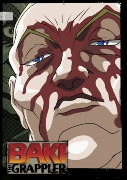

Baki
Baki Hanma, es un luchador jóven que se muere de ganas por seguir los pasos de su padre, Yujiro Hanma, y convertirse en el luchador más fuerte del mundo. A través de esto, él se entrena incansablemente y lucha constantemente para afilar sus habilidades y desarrollar su cuerpo para alcanzar estos objetivos. Muchas batallas intensas le deparan a Baki; como él va buscando ser el mejor para, en última instancia, tomar el título de “Rey” de su padre; Baki Hanma, hijo del grappler más fuerte del mundo, trata de reclamar el trono de su padre. Para conseguirlo, él tiene que luchar mucho, y hacer muchos amigos y enemigos en el proceso.
Series
Baki es una serie, cuyo manga original comenzó a publicarse en 1991 y que aun sigue publicandose, en todos estos años salieron varias series basadas en el manga de Baki.
Baki the Grappler (TV)
Baki es criado por su madre rica y obsesiva, Emi Akezawa, quien también costea su entrenamiento con la esperanza de que pueda ser un gran luchador como su padre. Sobre el comienzo de la serie, Baki supera el entrenamiento tradicional de artes marciales y pretende seguir el camino de la formación de su padre, encontrándose con grandes adversarios durante el camino. Ocasionalmente, Baki pelea con su padre y es derrotado por este sin problema. Después de la pelea, Baki viaja alrededor del mundo para continuar su entrenamiento. Dos años después, se cruza en su camino una liga de luchas clandestinas donde pelea contra algunos de los más poderosos luchadores de todos los estilos de artes marciales. Es aquí donde realmente comienza a perfeccionar sus habilidades de artes marciales.
Baki the Grappler: Saidai Tournament-hen
Baki Hamma es actualmente el campeón de las peleas underground, donde la única es regla es "no utilizar armas, todo lo demás está permitido". Solo los mejores y más selectos peleadores tienen la oportunidad de participar. Esta vez, quien gane el campeonato ganara el cinturón legendario que está valorado en 7 millones de dolares, si bien es un gran premio, lo que los peleadores realmente quieren es ganar para ser conocido como el hombre más fuerte del mundo. Sin olvidar que el propósito de Baki es, ser el más fuerte para derrotar a su padre (Yujiro Hamma) quien asesino a su madre frente a sus ojos. En el torneo hay peleadores de todos los estilos, lo cual hace que sea un campeonato muy interesante.
Baki (2018)
El protagonista, Baki Hanma, entrena enfocado en superar a su padre, Yujiro Hanma, el luchador más fuerte del mundo. Cinco de los presos más violentos y brutales, se reúnen para enfrentar a Baki. Su objetivo es probar la derrota. Su fuerza y habilidad inigualable, los han llevado a aburrirse de la vida misma, y ahora buscan a Baki con la esperanza de que pueda abrumarlos y aplastarlos por completo. En esta crisis, otros guerreros de artes marciales subterráneos se reúnen para luchar al lado de Baki: Kaoru Hanayama, Gouki Shibukawa, Retsu Kaioh y Doppo Orochi. ¡Inicia un enfrentamiento épico entre los condenados a muerte y Baki y sus amigos!
Baki: Dai Raitaisai-hen
Cuando el cuerpo de Baki es devastado por el veneno, de repente lo llevan de urgencia a China para curarlo. Le espera el torneo de artes marciales más grande de China que solo ocurre una vez cada cien años. Incluso su padre, Yuujirou Hanma, y Mohammad Alai Jr participarán en la batalla. Para proteger el prestigio y la dignidad de las artes marciales chinas y evitar que el título de Kaiou caiga en manos de un extranjero.
Baki Hanma
Baki Hanma es el hijo de Yuujirou Hanma, la criatura viva más fuerte de la tierra temida por los países. Es un ejército de un solo hombre capaz incluso de crear o detener un terremoto con solo un puño. Tenía la reputación de desmantelar grandes operaciones militares solo con sus puños. La historia se centra en Baki Hanma mientras desafía a su padre, Yuujirou, conocido como el Ogro en los círculos de artes marciales. Para obtener las habilidades que necesita para superar a su poderoso padre, Baki ingresa a la Prisión Estatal de Arizona para enfrentarse a Biscuit Oliva, el famoso recluso conocido como el Sr. Desencadenado.